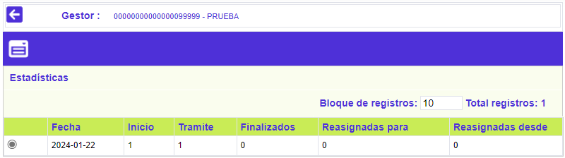
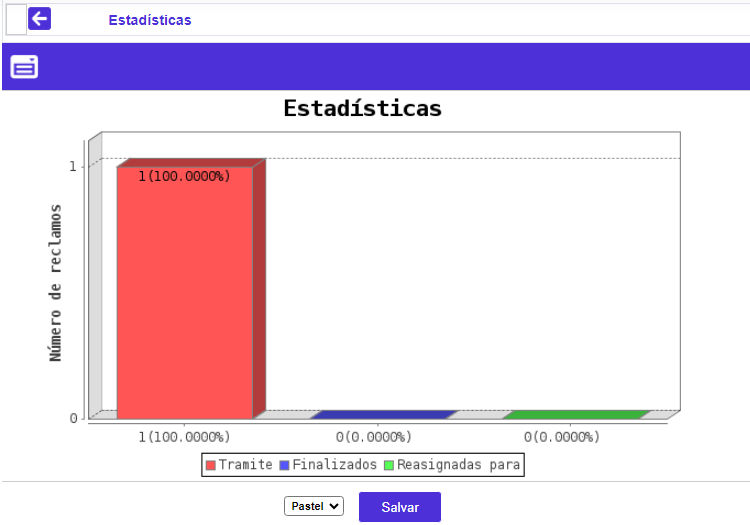

Gestores
Estadísticas: Mediante esta funcionalidad, el usuario puede consultar el histórico de los reclamos que ha tramitado o que ha finalizado cada gestor; conocer cuántos de los reclamos que le han asignados han sido reasignados a otros gestores, o cuántos le han sido reasignados de otros gestores.
Muestra la información organizada cronológicamente y cuenta con un botón para regresar al formulario principal Gestores.

Fecha |
Columna en la cual se despliegan el año y el mes a los cuales corresponden los datos desplegados en los demás campos. |
Inicio |
Número de reclamos con los cuales el gestor comenzó en dicho periodo. |
Trámite |
Número de reclamos tramitados por el gestor en dicho periodo. |
Finalizados |
Número de reclamos finalizados por el gestor en dicho periodo. |
Reasignados para |
Número de reclamos que le habían sido asignados al gestor consultado, pero que por determinada circunstancia, le fueron reasignados posteriormente a otro gestor. |
Reasignados desde |
Número de reclamos que le habían sido asignados a otros gestores, pero que por determinada circunstancia, le fueron reasignados posteriormente al gestor consultado. |
Estadísticas: Al activar ese enlace, el sistema permite visualizar, mediante una gráfica, los datos desde el que se invocó, en cuya parte inferior dispone de dos campos que permiten seleccionar entre Pastel o Barra, la manera que prefiere quien la genera:
